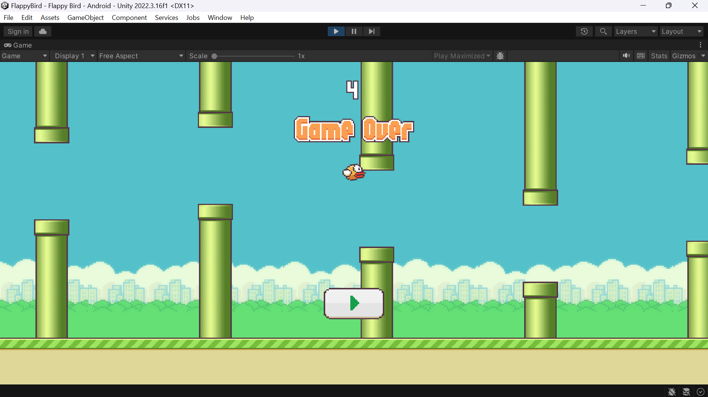
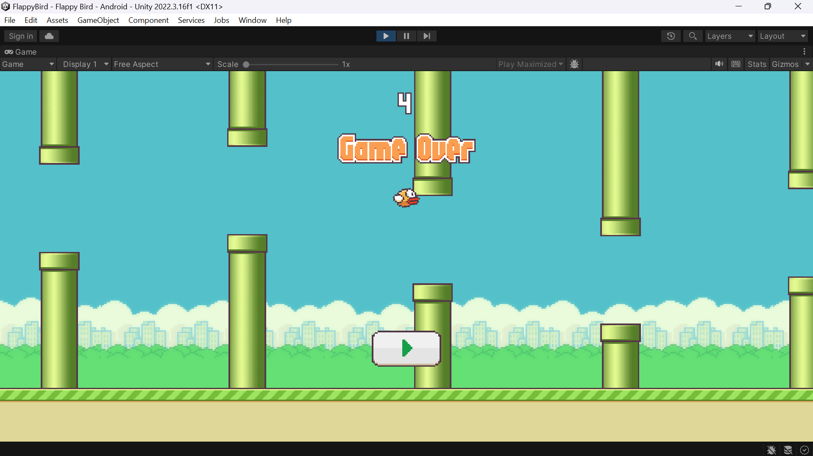

Flappy Bird
View on Github 

Description
This is a 2D clone of the popular game Flappy Bird. The player controls a bird and must navigate it through a series of pipes without hitting them. Each successful pass through a pair of pipes earns the player one point. The game ends if the bird collides with a pipe or if it falls below the screen.
Features
- Simple one-touch controls: Click or tap to make the bird flap its wings and ascend.
- Endless gameplay: The game continues indefinitely, challenging players to achieve higher scores.
- Score tracking: Keep track of your highest score achieved during gameplay.
Technologies Used
- Unity
- C#
- 2D Modeling